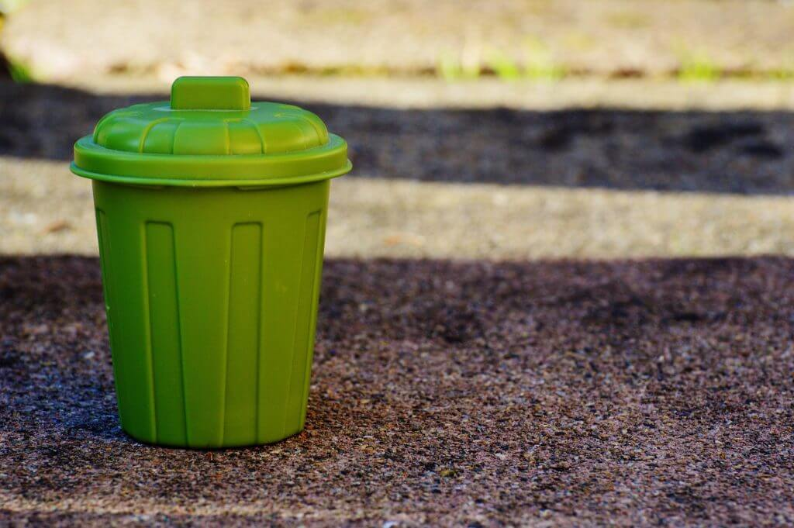

Home Service
We'll take out the waste. Pariyavaran offers reliable,br responsible Home waste management.

We'll take out the waste. Pariyavaran offers reliable,br responsible Home waste management.
| The Green and Blue Cans Arrive | Daily Collection | |
|---|---|---|
| On your first day of service, we'll deliver two special bins to your doorstep: a green one and a blue one. These aren't just ordinary bins; they are your gateway to a cleaner and greener environment. | Enjoy daily waste collection convenience with us. Leave your bins out at night, and wake up to a clean, eco-friendly home every morning. |
Green waste bin, is a specialized container used for collecting organic waste like yard trimmings and kitchen scraps. It plays a crucial role in separating organic materials from non-organic waste, reducing landfill waste. The contents of green cans are often processed into organic fertilizer or compost, promoting eco-friendly waste management practices and enriching soil for agriculture and gardening. These bins are commonly part of municipal waste management programs to encourage sustainability.
A blue can, commonly referred to as a blue recycling bin, is a designated container used for the collection of recyclable materials such as paper, cardboard, glass, plastic, and metal. Its primary purpose is to separate recyclables from regular trash, aiding in the recycling process. The contents of blue cans are typically sorted, cleaned, and processed to be reused or repurposed, reducing the strain on landfills and conserving valuable resources. Municipal recycling programs often provide blue cans to encourage residents to participate in recycling efforts, contributing to a more sustainable and environmentally friendly waste management system.

999 875 345
999 875 346
Home waste management
Voucher System